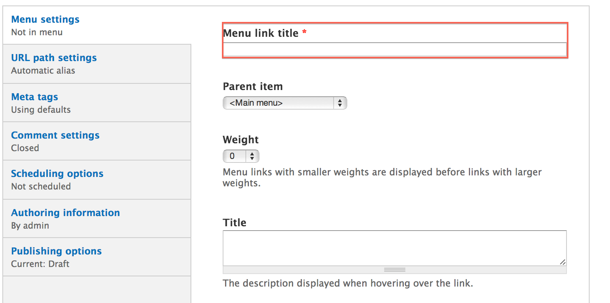
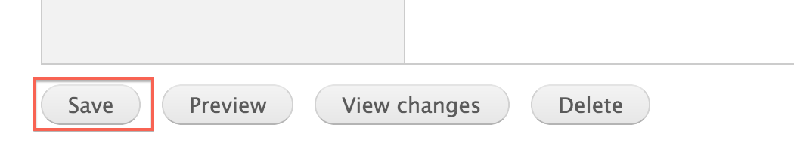

Inner pages are a content type similar to a page, but are considered child pages and therefore inherit properties of the content you are creating an inner page of.
For example, if you were to create an inner page for a Department, the inner page would inherit the top banner and Department Menu of that Department. Before creating an Inner Page, make sure you have already created the parent Page, Department, Center, or Program that the Inner Page will be a child of.
In the Administration Menu, navigate to:
My Workbench > Create content > Inner page

A banner can be inherited since this will be an Inner Page, so you can choose to inherit the banner or add a new or existing Banner Slide
For a more detailed tutorial on banners, see the Banner Slide tutorial.
By default the banner is inherited. Should you not want to inherit the Banner, you may add a new or existing banner. First, click on the Inherit Banner section and uncheck the Inherit Banner checkbox.

Click on the Banner section and proceed to add a new or existing banner.

Enter the Title for this inner page.

Enter the Body of this department. This is the main copy of your inner page.

Using the editor toolbar, you can add images or format your copy.

Select an Image for this inner page.

Choose a Menu link title which will be the name of the menu item displayed.

The Parent item is the location where this inner page will be found in the menu. The Parent item must be content such as a Department, Page, Program or Center.

More detail on the remaining items in this section can be found in the Menu settings documentation.
While viewing a inner page, click the New draft tab located at the top of the inner page.

Updating a inner page is very similar to Creating a inner page. Make the changes you want and then click the Save button located at the bottom of the inner page.

While viewing a inner page, click the New draft tab located at the top of the inner page.
At the bottom of the New draft form, click Delete.

Confirm the deletion by clicking the Delete button.

On the inner page you want to change the layout for, click the Change this layout button located at the bottom of the inner page.

Select the layout you would like for this inner page.

Move content around and once you are satisfied, click Save.

On the inner page you want to customize, click the Customize this inner page button located at the bottom of the inner page.

Make the changes that you want.
For a more detailed tutorial, please read Customizing inner pages
Once you are satisfied with the changes, click Save.

Created on January 7, 2014
Last modified on January 9, 2014
Authored by Gray Sadler